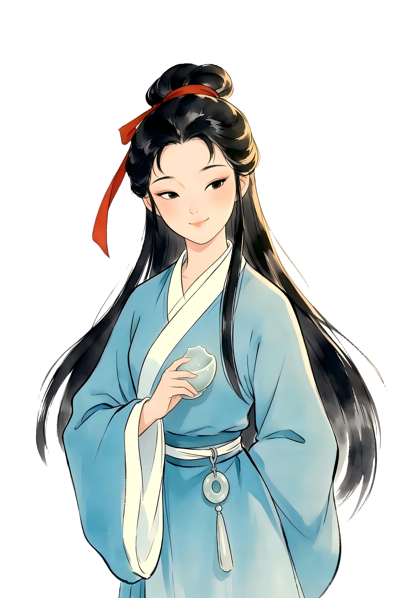
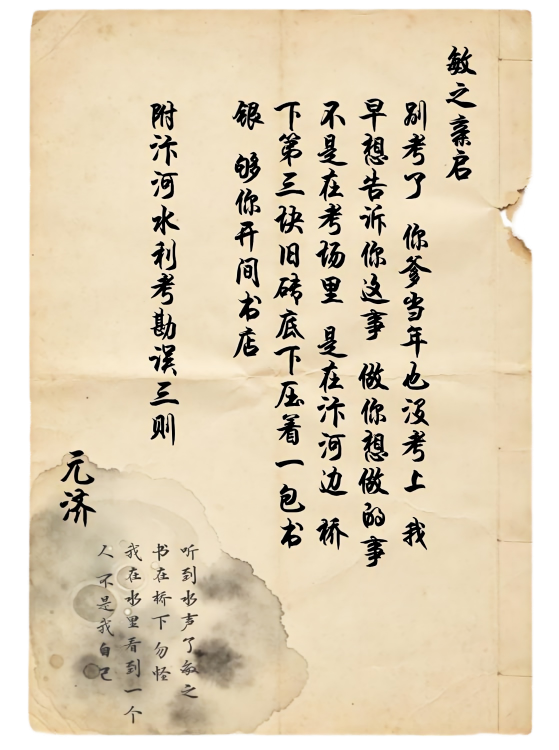

如期
第二章 · 汴河疑影
As Promised.
后来你走了很远的路。有些记忆沉在河底——等另一个人去捞。
点击继续

汴河水流声……
（3秒后恢复）
江卿禾有发现，问她？
提问
追问
摊牌
沉默
问江卿禾
言说
移送
汴河疑影·卷宗移送
查：
沈元济一案，已由
轮回者
裁断。
裁断结论：
——
遗留问题：
河底仍有未明物体，疑与殷墟祭祀坑有关。
移送目的地：
洛阳·端门
接收人：
方祀
移交地：
洛阳·端门·大傩礼
传递物：
水汽鹤羽

收起信笺
收入囊中
云 笺
以云端笔墨，续古今之谈
洒金笺
三十轮对话 · 浅酌小叙
¥6
薛涛笺
一百轮对话 · 秉烛长谈
¥16
流沙笺
三百轮对话 · 常伴左右
¥32
关 闭
行 迹
以步履丈量古今之间 · 郑州
郑州商城
早商
同城
开封州桥
北宋
约 60 km
新乡潞王陵
明
约 66 km
洛阳端门
汉
约 110 km
漯河贾湖
裴李岗
约 146 km
周口太昊陵
传说
约 160 km
安阳殷墟
商晚
约 165 km
三门峡仰韶村
仰韶
约 171 km
南阳黄山
新石器
约 680 km
关 闭
点击获取
关 闭
⛶ 全屏